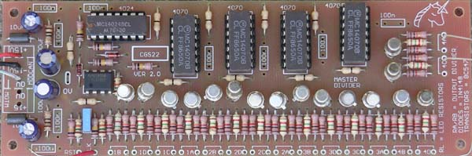

|
Master Divider for music synthesizers.

This module is series of dividers and "phase shifters" for converting a single clock pulse train into an array of frequencies. The incoming clock signal is divided into successive clock signals, each half the frequency (twice the period) of the previous. Three other outputs, each successively shifted by 90$deg; are also provided. While the first stage has outputs for 90° and 270°, the usability of these outputs is dependent entirely on the waveshape of the clock signal, with square being optimal. A LED can be included for each of the outputs, enough to satisfy anyone with a love of flashing LEDs. How to use this module: The purpose of this module is to divide down a system master clock (e.g. a VCLFO) to drive an array of sequencers or other timed events. The different phase outputs are to allow for modules that may trigger from the falling edge of a wave, or to allow for deliberate lagging of an event. It would for example be possible to have two sequencers running from this unit, one at 1/8 of the frequency of the other, their outputs being mixed to give a sequence that changes fundamental pitch each eight notes. A little on how it works: The master divider is a fairly simple circuit with a lot of repetition. The circuit consists of several distinct blocks. The first are the input shapers, made from the TL072 and its associated components. These take whatever signal is fed into the module and convert them to signals appropriate for driving the rest of the circuitry. With the values given, the sensitivity is set at around 2 volts, allowing triggering from signals with a +/- 10 volt swing, or with a 0V to +10 volt swing, both of which are common in modulars. The output wave forms of some modules will never fall below the 1.4V level, preventing triggering. The upper section of the TL072 is used to process the Clock input. The frequency of the clock signal determines the speed of the output pulses. It can be derived from an LFO, sequencer or any similar pulse source. It is best if a square wave is used, or the 90° and 270° outputs of the first stage will be distorted. The lower section of the TL072 and its associated components form a "gate to trigger converter", generating a narrow positive going pulse when the "Reset" input goes above the 2 volt threshold. This is used to reset the 4024 divider, and sends all "A" outputs HIGH, and "C" outputs LOW. The exclusive OR gates of IC1 - 4 are wired into identical networks, each which combines a output stage with the one above it to get the four phase outputs.
Timing diagram for the CGS22 V2 master divider
Construction
The component overlay. Connections can be determined from the circuit diagram and tables. Before you start assembly, check the board for etching faults. Look for any shorts between tracks, or open circuits due to over etching. Take this opportunity to sand the edges of the board if needed, removing any splinters or rough edges. (With the boards supplied by me, the edges are already milled, and etching faults are very rare.) When you are happy with the printed circuit board, construction can proceed as normal, starting with the resistors first, followed by the IC socket if used, then moving onto the taller components. Take particular care with the orientation of the polarized components such as electrolytics, diodes, transistors and ICs. When inserting ICs into sockets, take care not to accidentally bend any of the pins under the chip. Also, make sure the notch on the chip is aligned with the notch marked on the PCB overlay.
Suggested values for the resistors are as follows:
This will give an output that moves between approximately 5 volts and 0 volts, and will drive a common LED with reasonable brightness. If you use high brightness LEDs, you can easily increase RL to 10k as shown on my prototype, though if you do this, you may need to match the LEDs for consistent brightness. The LEDs can be omitted with no further circuit modification. Note that on this board I decided to mount most of the decoupling capacitors directly to the solder side of the board. Pads are provided on pin 7 and 14 of each of the 4070 for 100n the decoupling capacitors. The remaining decoupling capacitors are 1206 100n SMT devices, though in all but one case, regular through hole capacitors could be substituted. The underside of the Ver 2 board showing the decoupling capacitors. The circled SMT location is the only one that does not allow for a through-hole alternative.
For each pair of output pads, the left one is the output while the right one is to drive the LED. There is a modification needed on the VER2.0 run of these PCBs only. These boards are easilly identified because they are RED. (VER2.1, VER2.2 do not need these changes.):
The underside of the Ver 2.0 board showing the required modifications. This board is was made with a RED solder mask. Note that the designators on the output pads (1A, 1B 1C etc.) refer to the chip to which they are connected, not the output group to which they belong. Be careful this doesn't confuse you. Pads 4A and 4C are swapped with each other on VER2.0 and VER2.1 PCBs. Make sure you do NOT get any 74HCT40xx, or some other 74xxx variant designed to run on 5 volts. You want CD40xx or in the case of Motorola, MC140xx. If the salesman behind the counter tells you the 74xxx will work just as well, IGNORE HIM - he's a salesman, not a technician or engineer. Transistor type is not critical. Any general purpose NPN should work.
The table above shows how to wire up the outputs. Notes:
Parts list This is a guide only. Parts needed will vary with individual constructor's needs. If anyone is interested in buying these boards, please check the PCBs for Sale page to see if I have any in stock. The prototype boards are being sold at half price, because I am not totally happy with them.
Can't find the parts? See the parts FAQ to see if I've already answered the question. Also see the CGS Synth discussion group.
Article, art & design copyright 2001 by Ken Stone
| |||||||||||||||||||||||||||||||||||||||||||||||||||||||||||||||||||||||||||||||||||||||||